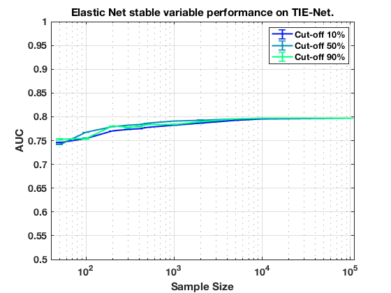
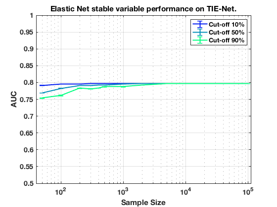

Stable Variable Experiments on TieNet with LARS EN.
summary_stable_vars("TieNet", 3)
Figure 5. LARS_EN Model Generalizatbility.
___________________________________________

Figure 6. LARS_EN Feature Generalizability.
____________________________________________

Table 23. Stability Cut Off Performance. Sample Size = 50. LARS_EN.
____________________________________________________________________
Stability Model_Generalizability Feature_Generalizability Number_Stable_Features Number_Non_Zero
_________ ______________________ ________________________ ______________________ _______________
'>=00%' ' 0.741 +/- 0.001 ' ' 0.795 +/- 0.000 ' ' 20.3 +/- 7.7 ' 3
'>=10%' ' 0.735 +/- 0.001 ' ' 0.795 +/- 0.000 ' ' 20.3 +/- 7.7 ' 3
'>=20%' ' 0.735 +/- 0.001 ' ' 0.794 +/- 0.000 ' ' 18.0 +/- 7.8 ' 3
'>=30%' ' 0.738 +/- 0.001 ' ' 0.790 +/- 0.000 ' ' 11.7 +/- 5.9 ' 3
'>=40%' ' 0.733 +/- 0.001 ' ' 0.790 +/- 0.000 ' ' 11.7 +/- 5.9 ' 3
'>=50%' ' 0.737 +/- 0.001 ' ' 0.788 +/- 0.000 ' ' 15.0 +/- 9.2 ' 2
'>=60%' ' 0.745 +/- 0.001 ' ' 0.786 +/- 0.000 ' ' 12.5 +/- 8.1 ' 2
'>=70%' ' 0.734 +/- 0.001 ' ' 0.780 +/- 0.001 ' ' 12.5 +/- 8.1 ' 2
'>=80%' ' 0.739 +/- 0.001 ' ' 0.773 +/- 0.001 ' ' 11.5 +/- 7.4 ' 2
'>=90%' ' 0.729 +/- 0.001 ' ' 0.758 +/- 0.001 ' ' 15.0 +/- 0.0 ' 1
Table 24. Stability Cut Off Performance. Sample Size = 100. LARS_EN.
_____________________________________________________________________
Stability Model_Generalizability Feature_Generalizability Number_Stable_Features Number_Non_Zero
_________ ______________________ ________________________ ______________________ _______________
'>=00%' ' 0.758 +/- 0.000 ' ' 0.795 +/- 0.000 ' ' 14.3 +/- 5.7 ' 3
'>=10%' ' 0.756 +/- 0.000 ' ' 0.795 +/- 0.000 ' ' 14.3 +/- 5.7 ' 3
'>=20%' ' 0.759 +/- 0.000 ' ' 0.794 +/- 0.000 ' ' 11.3 +/- 3.9 ' 3
'>=30%' ' 0.765 +/- 0.000 ' ' 0.791 +/- 0.000 ' ' 7.3 +/- 3.1 ' 3
'>=40%' ' 0.763 +/- 0.001 ' ' 0.791 +/- 0.000 ' ' 7.3 +/- 3.1 ' 3
'>=50%' ' 0.761 +/- 0.000 ' ' 0.789 +/- 0.000 ' ' 7.3 +/- 3.1 ' 3
'>=60%' ' 0.763 +/- 0.000 ' ' 0.786 +/- 0.000 ' ' 6.0 +/- 2.6 ' 3
'>=70%' ' 0.760 +/- 0.001 ' ' 0.785 +/- 0.000 ' ' 3.7 +/- 1.3 ' 3
'>=80%' ' 0.762 +/- 0.001 ' ' 0.780 +/- 0.000 ' ' 3.3 +/- 1.1 ' 3
'>=90%' ' 0.760 +/- 0.001 ' ' 0.774 +/- 0.001 ' ' 3.5 +/- 1.8 ' 2
Table 25. Stability Cut Off Performance. Sample Size = 200. LARS_EN.
_____________________________________________________________________
Stability Model_Generalizability Feature_Generalizability Number_Stable_Features Number_Non_Zero
_________ ______________________ ________________________ ______________________ _______________
'>=00%' ' 0.773 +/- 0.000 ' ' 0.796 +/- 0.000 ' ' 13.0 +/- 4.2 ' 3
'>=10%' ' 0.772 +/- 0.000 ' ' 0.796 +/- 0.000 ' ' 13.0 +/- 4.2 ' 3
'>=20%' ' 0.772 +/- 0.000 ' ' 0.795 +/- 0.000 ' ' 11.0 +/- 4.1 ' 3
'>=30%' ' 0.778 +/- 0.000 ' ' 0.794 +/- 0.000 ' ' 6.3 +/- 2.2 ' 3
'>=40%' ' 0.777 +/- 0.000 ' ' 0.794 +/- 0.000 ' ' 6.3 +/- 2.2 ' 3
'>=50%' ' 0.779 +/- 0.000 ' ' 0.794 +/- 0.000 ' ' 8.5 +/- 3.9 ' 2
'>=60%' ' 0.779 +/- 0.000 ' ' 0.794 +/- 0.000 ' ' 8.0 +/- 4.2 ' 2
'>=70%' ' 0.780 +/- 0.000 ' ' 0.793 +/- 0.000 ' ' 8.0 +/- 4.2 ' 2
'>=80%' ' 0.781 +/- 0.000 ' ' 0.792 +/- 0.000 ' ' 6.0 +/- 3.5 ' 2
'>=90%' ' 0.780 +/- 0.000 ' ' 0.791 +/- 0.000 ' ' 11.0 +/- 0.0 ' 1
Table 26. Stability Cut Off Performance. Sample Size = 300. LARS_EN.
_____________________________________________________________________
Stability Model_Generalizability Feature_Generalizability Number_Stable_Features Number_Non_Zero
_________ ______________________ ________________________ ______________________ _______________
'>=00%' ' 0.777 +/- 0.000 ' ' 0.796 +/- 0.000 ' ' 15.3 +/- 5.1 ' 3
'>=10%' ' 0.776 +/- 0.000 ' ' 0.796 +/- 0.000 ' ' 15.3 +/- 5.1 ' 3
'>=20%' ' 0.779 +/- 0.000 ' ' 0.796 +/- 0.000 ' ' 14.0 +/- 4.9 ' 3
'>=30%' ' 0.780 +/- 0.000 ' ' 0.795 +/- 0.000 ' ' 10.0 +/- 4.6 ' 3
'>=40%' ' 0.781 +/- 0.000 ' ' 0.795 +/- 0.000 ' ' 10.0 +/- 4.6 ' 3
'>=50%' ' 0.781 +/- 0.000 ' ' 0.794 +/- 0.000 ' ' 10.5 +/- 6.7 ' 2
'>=60%' ' 0.783 +/- 0.000 ' ' 0.793 +/- 0.000 ' ' 13.0 +/- 0.0 ' 1
'>=70%' ' 0.783 +/- 0.000 ' ' 0.793 +/- 0.000 ' ' 13.0 +/- 0.0 ' 1
'>=80%' ' 0.783 +/- 0.000 ' ' 0.793 +/- 0.000 ' ' 7.0 +/- 0.0 ' 1
'>=90%' ' 0.782 +/- 0.000 ' ' 0.791 +/- 0.000 ' ' 7.0 +/- 0.0 ' 1
Table 27. Stability Cut Off Performance. Sample Size = 400. LARS_EN.
_____________________________________________________________________
Stability Model_Generalizability Feature_Generalizability Number_Stable_Features Number_Non_Zero
_________ ______________________ ________________________ ______________________ _______________
'>=00%' ' 0.780 +/- 0.000 ' ' 0.796 +/- 0.000 ' ' 13.3 +/- 3.9 ' 3
'>=10%' ' 0.781 +/- 0.000 ' ' 0.796 +/- 0.000 ' ' 13.3 +/- 3.9 ' 3
'>=20%' ' 0.781 +/- 0.000 ' ' 0.796 +/- 0.000 ' ' 10.0 +/- 3.8 ' 3
'>=30%' ' 0.782 +/- 0.000 ' ' 0.795 +/- 0.000 ' ' 8.0 +/- 3.5 ' 3
'>=40%' ' 0.784 +/- 0.000 ' ' 0.795 +/- 0.000 ' ' 8.0 +/- 3.5 ' 3
'>=50%' ' 0.784 +/- 0.000 ' ' 0.795 +/- 0.000 ' ' 7.7 +/- 3.3 ' 3
'>=60%' ' 0.784 +/- 0.000 ' ' 0.794 +/- 0.000 ' ' 5.7 +/- 2.1 ' 3
'>=70%' ' 0.784 +/- 0.000 ' ' 0.793 +/- 0.000 ' ' 3.3 +/- 1.1 ' 3
'>=80%' ' 0.784 +/- 0.000 ' ' 0.792 +/- 0.000 ' ' 3.0 +/- 1.2 ' 3
'>=90%' ' 0.785 +/- 0.000 ' ' 0.791 +/- 0.000 ' ' 6.0 +/- 0.0 ' 1
Table 28. Stability Cut Off Performance. Sample Size = 500. LARS_EN.
_____________________________________________________________________
Stability Model_Generalizability Feature_Generalizability Number_Stable_Features Number_Non_Zero
_________ ______________________ ________________________ ______________________ _______________
'>=00%' ' 0.783 +/- 0.000 ' ' 0.797 +/- 0.000 ' ' 34.0 +/- 7.3 ' 3
'>=10%' ' 0.782 +/- 0.000 ' ' 0.797 +/- 0.000 ' ' 34.0 +/- 7.3 ' 3
'>=20%' ' 0.784 +/- 0.000 ' ' 0.796 +/- 0.000 ' ' 16.3 +/- 5.4 ' 3
'>=30%' ' 0.786 +/- 0.000 ' ' 0.794 +/- 0.000 ' ' 12.0 +/- 4.6 ' 3
'>=40%' ' 0.785 +/- 0.000 ' ' 0.794 +/- 0.000 ' ' 12.0 +/- 4.6 ' 3
'>=50%' ' 0.787 +/- 0.000 ' ' 0.794 +/- 0.000 ' ' 9.7 +/- 4.4 ' 3
'>=60%' ' 0.787 +/- 0.000 ' ' 0.793 +/- 0.000 ' ' 9.0 +/- 4.1 ' 3
'>=70%' ' 0.788 +/- 0.000 ' ' 0.793 +/- 0.000 ' ' 12.5 +/- 7.4 ' 2
'>=80%' ' 0.787 +/- 0.000 ' ' 0.793 +/- 0.000 ' ' 11.5 +/- 7.4 ' 2
'>=90%' ' 0.787 +/- 0.000 ' ' 0.792 +/- 0.000 ' ' 20.0 +/- 0.0 ' 1
Table 29. Stability Cut Off Performance. Sample Size = 1000. LARS_EN.
______________________________________________________________________
Stability Model_Generalizability Feature_Generalizability Number_Stable_Features Number_Non_Zero
_________ ______________________ ________________________ ______________________ _______________
'>=00%' ' 0.791 +/- 0.000 ' ' 0.797 +/- 0.000 ' ' 23.3 +/- 3.0 ' 3
'>=10%' ' 0.790 +/- 0.000 ' ' 0.797 +/- 0.000 ' ' 23.3 +/- 3.0 ' 3
'>=20%' ' 0.791 +/- 0.000 ' ' 0.797 +/- 0.000 ' ' 16.0 +/- 3.2 ' 3
'>=30%' ' 0.792 +/- 0.000 ' ' 0.796 +/- 0.000 ' ' 10.7 +/- 3.9 ' 3
'>=40%' ' 0.792 +/- 0.000 ' ' 0.796 +/- 0.000 ' ' 10.7 +/- 3.9 ' 3
'>=50%' ' 0.792 +/- 0.000 ' ' 0.796 +/- 0.000 ' ' 10.3 +/- 4.0 ' 3
'>=60%' ' 0.791 +/- 0.000 ' ' 0.796 +/- 0.000 ' ' 13.0 +/- 7.1 ' 2
'>=70%' ' 0.791 +/- 0.000 ' ' 0.795 +/- 0.000 ' ' 13.0 +/- 7.1 ' 2
'>=80%' ' 0.790 +/- 0.000 ' ' 0.795 +/- 0.000 ' ' 13.0 +/- 7.1 ' 2
'>=90%' ' 0.791 +/- 0.000 ' ' 0.794 +/- 0.000 ' ' 12.0 +/- 7.8 ' 2
Table 30. Stability Cut Off Performance. Sample Size = 2000. LARS_EN.
______________________________________________________________________
Stability Model_Generalizability Feature_Generalizability Number_Stable_Features Number_Non_Zero
_________ ______________________ ________________________ ______________________ _______________
'>=00%' ' 0.794 +/- 0.000 ' ' 0.797 +/- 0.000 ' ' 17.7 +/- 2.7 ' 3
'>=10%' ' 0.794 +/- 0.000 ' ' 0.797 +/- 0.000 ' ' 17.7 +/- 2.7 ' 3
'>=20%' ' 0.794 +/- 0.000 ' ' 0.796 +/- 0.000 ' ' 11.3 +/- 2.0 ' 3
'>=30%' ' 0.794 +/- 0.000 ' ' 0.796 +/- 0.000 ' ' 9.7 +/- 2.4 ' 3
'>=40%' ' 0.793 +/- 0.000 ' ' 0.796 +/- 0.000 ' ' 9.7 +/- 2.4 ' 3
'>=50%' ' 0.793 +/- 0.000 ' ' 0.796 +/- 0.000 ' ' 8.7 +/- 2.8 ' 3
'>=60%' ' 0.793 +/- 0.000 ' ' 0.795 +/- 0.000 ' ' 7.7 +/- 3.0 ' 3
'>=70%' ' 0.793 +/- 0.000 ' ' 0.795 +/- 0.000 ' ' 7.3 +/- 3.1 ' 3
'>=80%' ' 0.793 +/- 0.000 ' ' 0.794 +/- 0.000 ' ' 7.3 +/- 3.1 ' 3
'>=90%' ' 0.792 +/- 0.000 ' ' 0.794 +/- 0.000 ' ' 6.3 +/- 3.1 ' 3
Table 31. Stability Cut Off Performance. Sample Size = 5000. LARS_EN.
______________________________________________________________________
Stability Model_Generalizability Feature_Generalizability Number_Stable_Features Number_Non_Zero
_________ ______________________ ________________________ ______________________ _______________
'>=00%' ' 0.796 +/- 0.000 ' ' 0.797 +/- 0.000 ' ' 22.7 +/- 2.9 ' 3
'>=10%' ' 0.796 +/- 0.000 ' ' 0.797 +/- 0.000 ' ' 22.7 +/- 2.9 ' 3
'>=20%' ' 0.795 +/- 0.000 ' ' 0.797 +/- 0.000 ' ' 21.0 +/- 3.2 ' 3
'>=30%' ' 0.795 +/- 0.000 ' ' 0.796 +/- 0.000 ' ' 18.0 +/- 4.1 ' 3
'>=40%' ' 0.795 +/- 0.000 ' ' 0.796 +/- 0.000 ' ' 18.0 +/- 4.1 ' 3
'>=50%' ' 0.795 +/- 0.000 ' ' 0.796 +/- 0.000 ' ' 17.3 +/- 4.1 ' 3
'>=60%' ' 0.794 +/- 0.000 ' ' 0.795 +/- 0.000 ' ' 13.3 +/- 3.5 ' 3
'>=70%' ' 0.794 +/- 0.000 ' ' 0.795 +/- 0.000 ' ' 8.0 +/- 3.2 ' 3
'>=80%' ' 0.794 +/- 0.000 ' ' 0.795 +/- 0.000 ' ' 7.3 +/- 3.4 ' 3
'>=90%' ' 0.793 +/- 0.000 ' ' 0.794 +/- 0.000 ' ' 7.3 +/- 3.4 ' 3
Table 32. Stability Cut Off Performance. Sample Size = 10000. LARS_EN.
_______________________________________________________________________
Stability Model_Generalizability Feature_Generalizability Number_Stable_Features Number_Non_Zero
_________ ______________________ ________________________ ______________________ _______________
'>=00%' ' 0.796 +/- 0.000 ' ' 0.797 +/- 0.000 ' ' 25.3 +/- 2.7 ' 3
'>=10%' ' 0.797 +/- 0.000 ' ' 0.797 +/- 0.000 ' ' 25.3 +/- 2.7 ' 3
'>=20%' ' 0.796 +/- 0.000 ' ' 0.797 +/- 0.000 ' ' 22.0 +/- 3.3 ' 3
'>=30%' ' 0.796 +/- 0.000 ' ' 0.796 +/- 0.000 ' ' 19.0 +/- 4.1 ' 3
'>=40%' ' 0.796 +/- 0.000 ' ' 0.796 +/- 0.000 ' ' 19.0 +/- 4.1 ' 3
'>=50%' ' 0.796 +/- 0.000 ' ' 0.796 +/- 0.000 ' ' 18.3 +/- 4.4 ' 3
'>=60%' ' 0.796 +/- 0.000 ' ' 0.796 +/- 0.000 ' ' 17.7 +/- 4.2 ' 3
'>=70%' ' 0.796 +/- 0.000 ' ' 0.796 +/- 0.000 ' ' 17.3 +/- 4.4 ' 3
'>=80%' ' 0.795 +/- 0.000 ' ' 0.796 +/- 0.000 ' ' 16.3 +/- 4.4 ' 3
'>=90%' ' 0.795 +/- 0.000 ' ' 0.795 +/- 0.000 ' ' 24.0 +/- 0.7 ' 2
Table 33. Stability Cut Off Performance. Sample Size = 100000. LARS_EN.
________________________________________________________________________
Stability Model_Generalizability Feature_Generalizability Number_Stable_Features Number_Non_Zero
_________ ______________________ ________________________ ______________________ _______________
'>=00%' ' 0.797 +/- 0.000 ' ' 0.797 +/- 0.000 ' ' 25.0 +/- 2.8 ' 3
'>=10%' ' 0.797 +/- 0.000 ' ' 0.797 +/- 0.000 ' ' 25.0 +/- 2.8 ' 3
'>=20%' ' 0.796 +/- 0.000 ' ' 0.796 +/- 0.000 ' ' 22.0 +/- 3.4 ' 3
'>=30%' ' 0.796 +/- 0.000 ' ' 0.796 +/- 0.000 ' ' 18.7 +/- 4.0 ' 3
'>=40%' ' 0.796 +/- 0.000 ' ' 0.796 +/- 0.000 ' ' 18.7 +/- 4.0 ' 3
'>=50%' ' 0.796 +/- 0.000 ' ' 0.796 +/- 0.000 ' ' 18.7 +/- 4.0 ' 3
'>=60%' ' 0.796 +/- 0.000 ' ' 0.796 +/- 0.000 ' ' 18.0 +/- 3.8 ' 3
'>=70%' ' 0.796 +/- 0.000 ' ' 0.796 +/- 0.000 ' ' 16.0 +/- 4.0 ' 3
'>=80%' ' 0.796 +/- 0.000 ' ' 0.796 +/- 0.000 ' ' 15.7 +/- 4.2 ' 3
'>=90%' ' 0.795 +/- 0.000 ' ' 0.795 +/- 0.000 ' ' 23.0 +/- 0.0 ' 2